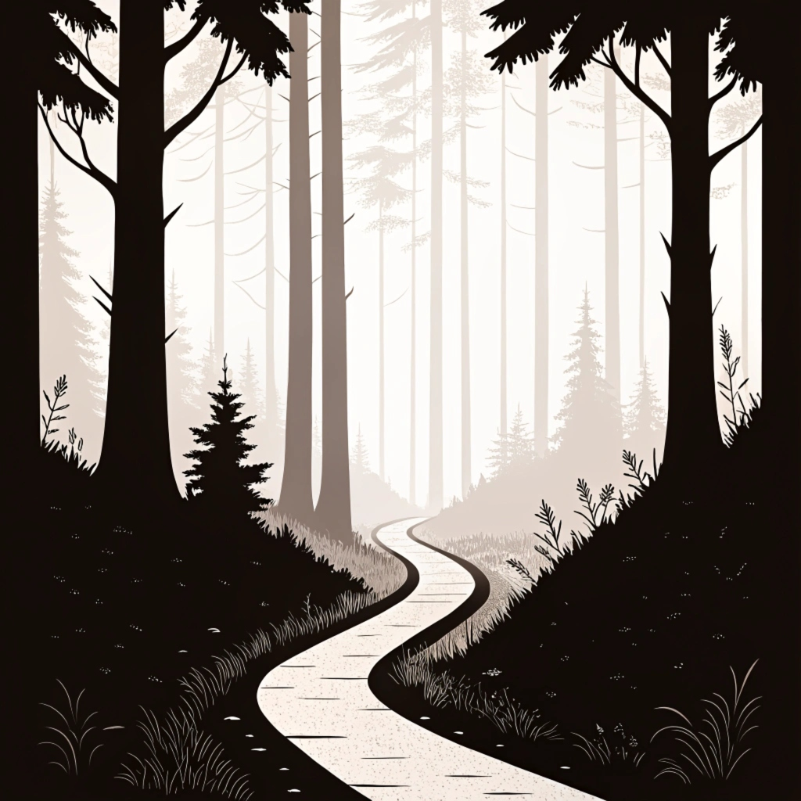
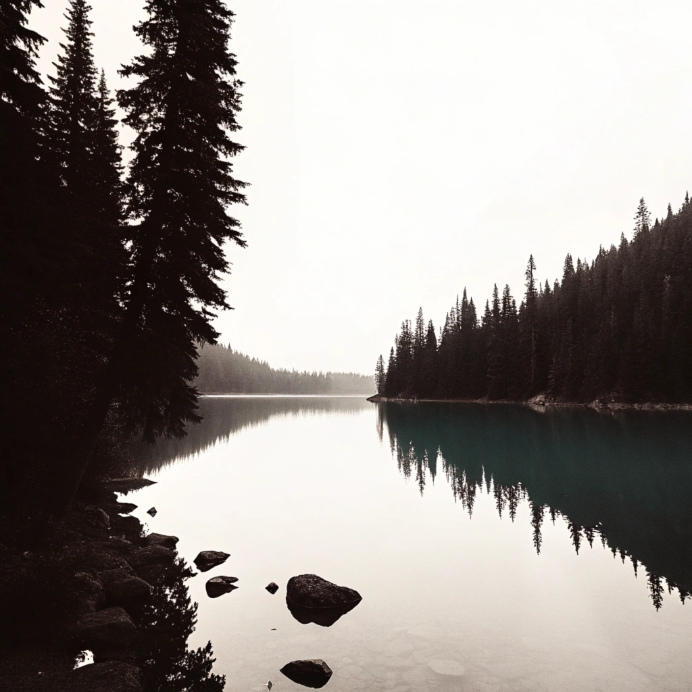
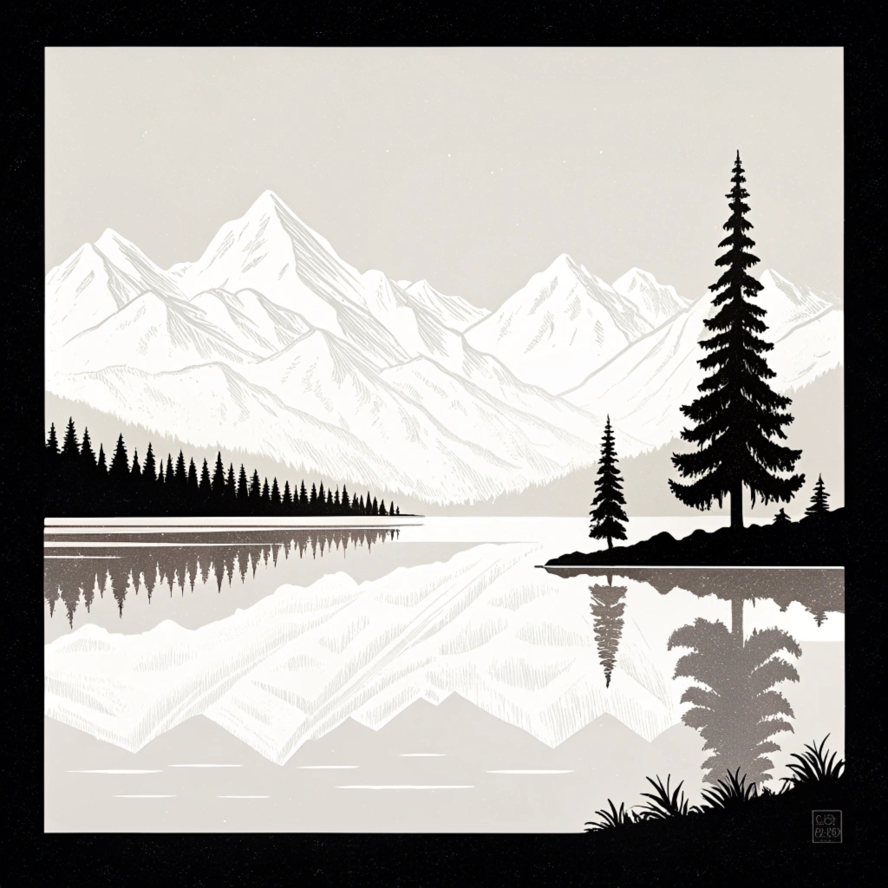
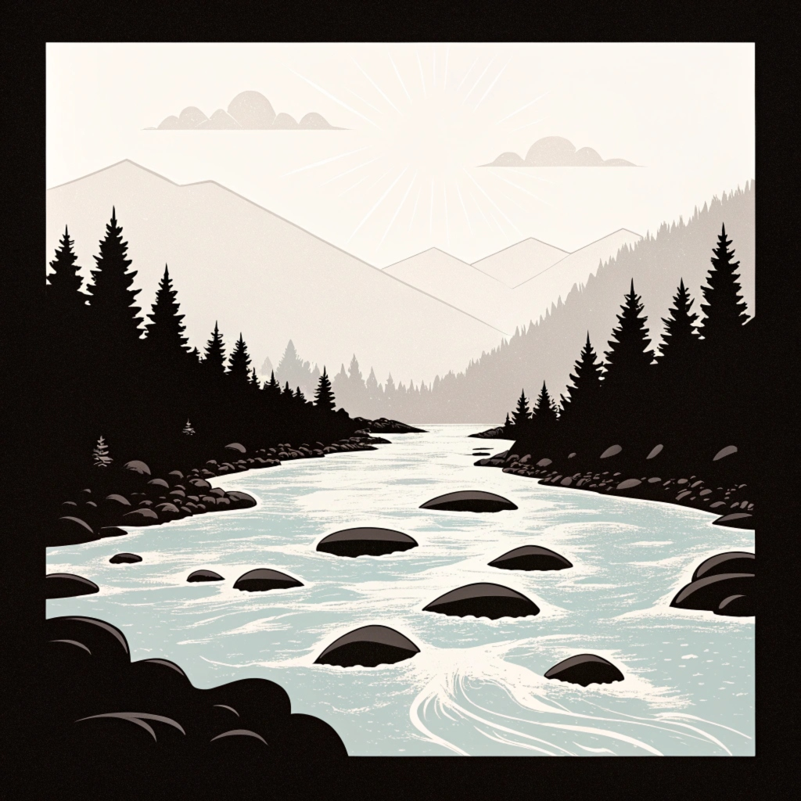
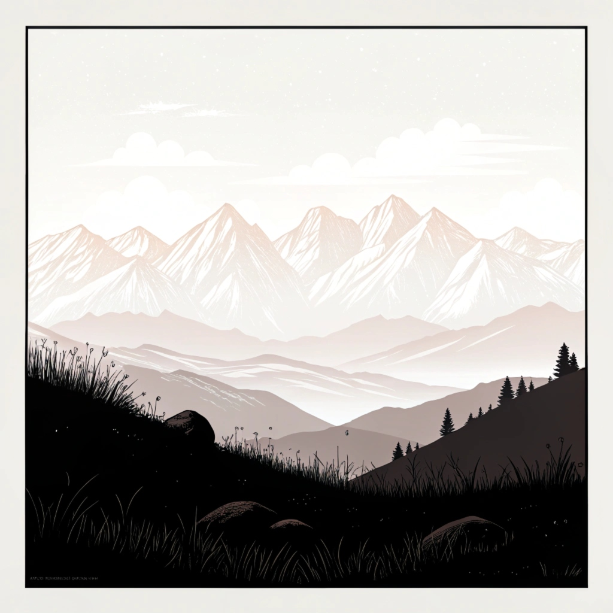
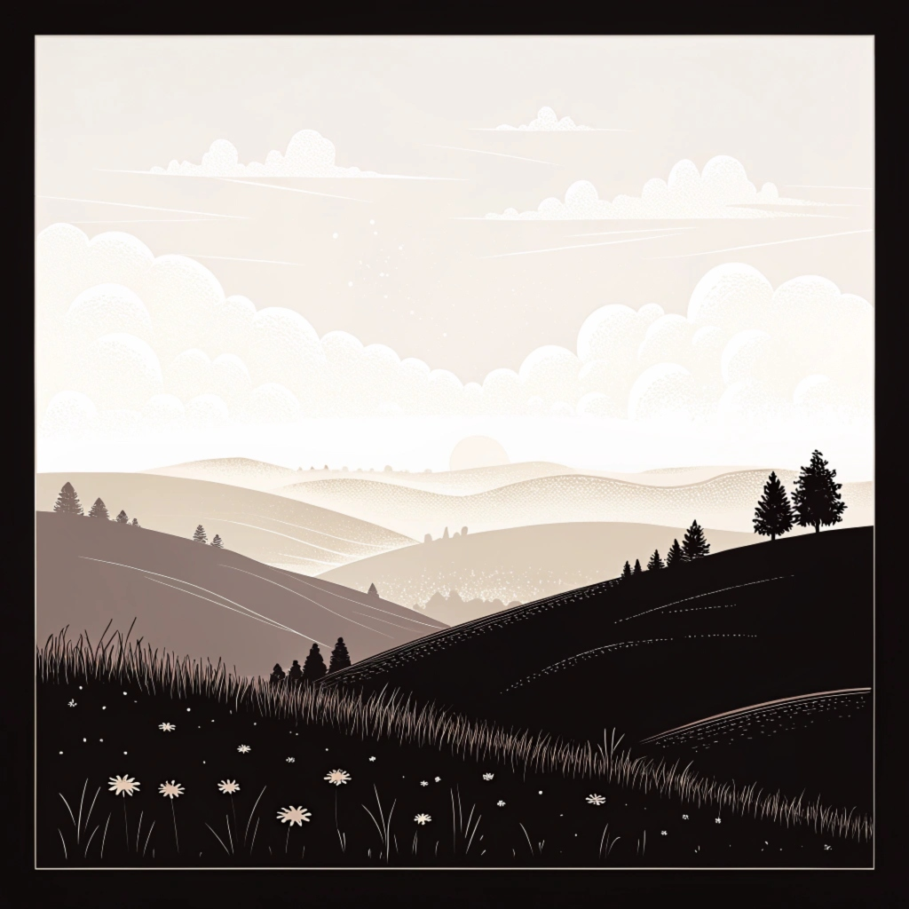

Below are some of the great pictures genereted by AI.
Please do drop me a line if you would like to
submit an image to this gallery.

A path through the unknown—where every twist and turn reveals the hidden magic of the forest.
[Generated by AI]

Reflections of serenity—a crystal-clear lake mirroring the beauty and calm of the surrounding forest.
[Generated by AI]

Standing in awe of nature's contrasts—snowy peaks rising above the glassy, peaceful lake below.
[Generated by AI]

The river's journey—a dance of water and rock, carving its way through timeless landscapes.
[Generated by AI]

Embracing the dawn from the peaks—where the world feels endless and the sky begins its gentle dance of colors.
[Generated by AI]

A sunset painted across the hills, filling the horizon with warmth and welcoming the calm of evening.
[Generated by AI]